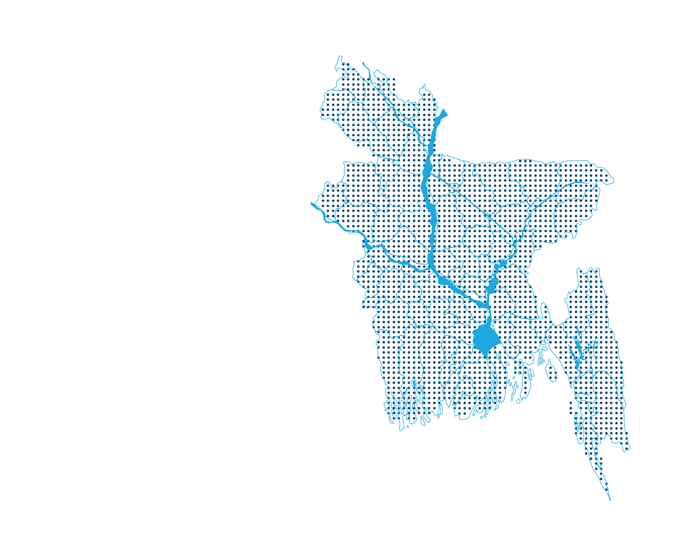

<!-- <swiper-container
 class="mySwiper" 
 pagination="true" 
 effect="coverflow" 
 grab-cursor="true"
  centered-slides="true"
slides-per-view="auto"
 coverflow-effect-rotate="50"
  coverflow-effect-stretch="0"
   coverflow-effect-depth="100"
coverflow-effect-modifier="1"
 coverflow-effect-slide-shadows="true"
 loop="true" 
  autoplay="true" 
  >
<swiper-slide *ngFor="let url of (presenceService.photoThread$| async)">
  
</swiper-slide>
</swiper-container> -->

<div class="row">
  
<div class="swiper-container-div col-md-6">
  

  <swiper-container class="mySwiper2" space-between="10" slides-per-view="5" free-mode="true"
    watch-slides-progress="true">
    <swiper-slide *ngFor="let url of (presenceService.photoThread$| async)">
      
    </swiper-slide> 
  </swiper-container>

  <hr *ngIf="(presenceService.photoThread$| async).length > 0" />

  <swiper-container style="--swiper-navigation-color: #fff; --swiper-pagination-color: #fff" class="mySwiper"
    thumbs-swiper=".mySwiper2" space-between="4"  autoplay="true" loop="true"
     >
    <swiper-slide class="main_slid_image" *ngFor="let url of (presenceService.photoThread$| async)">
      
    </swiper-slide> 
  </swiper-container>
  <button (click)="addPin()">Add pin</button>
</div>

<div class="col-md-6 map-container"  id="mapContainer">

</div>
</div>